lorenz_partial_additive_mse_uniform_p30_obsnoise005_top3nd_init15_autodim__lc_sweepProject: Lorenz_INDpartial_NDInitSweep_autodim_D1_NormTrue__JacobianODE
Launched: 2026-04-21T22:10:42Z
Completed: 2026-04-22T14:15:24Z
Outcome: complete_clean
Git: latent-JacobianODE @ 3094575
Expected runs: 27
lorenz_partial_additive_mse_uniform_p30_obsnoise005_top3nd_init15_autodim__lc_sweepDescription
Lorenz partial additive coupling, uniform reconstruction loss, obs_noise=0.05, prediction_steps=30, traj_init_steps=15. 27-run sweep: 3 n_delays {45, 80, 85} × 9 LC weights {0, 1e-6, 1e-5, 1e-4, 1e-3, 1e-2, 1e-1, 1, 10}. n_target_dims picked by PCA-auto (threshold=0.99) per n_delays — with more delays and higher noise, the PCA threshold should select a larger n_target_dims (7 at n_d=45 → 13-14 at n_d=80-85 per the earlier sweep). Goal: same two-stage-stability check as the obsnoise001 companion sweep, but at higher noise where the n_delays surface was nearly flat and LC may cleanly break the tie.
Hypothesis
Because the LC=0 n_delays surface was flat at obs_noise=0.05 (top 3 within ~15% of each other), LC is likely what picks a winner here. LC's role is partially a denoising regularizer, so at higher noise we'd expect the best LC weight to be larger than at obsnoise001. High n_delays + high LC may win if the extra latent-space redundancy gives LC more room to find a clean chart — but it may also hurt if PCA-auto inflates n_target_dims and the dynamics MLP overfits.
Success criteria
Swept axes (11): data.train_test_params.delay_embedding_params.n_delays, model.encoder.init_pca_basis, model.encoder.n_input, model.encoder_only_mode, model.n_target_dims, model.n_target_dims_pca_auto, model.n_target_dims_pca_cum_var, model.params.input_dim, model.params.output_dim, model.trajectory_loss_most_recent, training.lightning.loop_closure_weight
Chosen run (by best_traj_loss): 84t4ol8o — traj_loss=0.00508, MASE=0.7485, R²=0.9867, LC loss=0.523, epoch=146.0
Swept-axis values at chosen run: data.train_test_params.delay_embedding_params.n_delays=85 · model.encoder.init_pca_basis=False · model.encoder.n_input=85 · model.encoder_only_mode=False · model.n_target_dims=14 · model.n_target_dims_pca_auto=14 · model.n_target_dims_pca_cum_var=0.990074 · model.params.input_dim=14 · model.params.output_dim=196 · model.trajectory_loss_most_recent=True · training.lightning.loop_closure_weight=1.0e-04
⚠️ 1 run_idx slot(s) had multiple matching wandb runs — the best by best_traj_loss was kept; the others are listed below for audit:
- run_idx=22: chose 1w0hev9p, dropped le0dzlw2
Runs analyzed: 27 (expected 27)
| run_idx | run_id | data.train_test_params.delay_embedding_params.n_delays |
model.encoder.init_pca_basis |
model.encoder.n_input |
model.encoder_only_mode |
model.n_target_dims |
model.n_target_dims_pca_auto |
model.n_target_dims_pca_cum_var |
model.params.input_dim |
model.params.output_dim |
model.trajectory_loss_most_recent |
training.lightning.loop_closure_weight |
best_traj_loss | best_MASE | R² | LC loss | epoch |
|---|---|---|---|---|---|---|---|---|---|---|---|---|---|---|---|---|---|
| 21 | 84t4ol8o |
85 | False | 85 | False | 14 | 14 | 0.990074 | 14 | 196 | True | 1.0e-04 | 0.00508 | 0.7485 | 0.9867 | 0.523 | 146.0 |
| 19 | m9skdt8y |
85 | None | 85 | None | 14 | 14 | 0.990074 | 14 | 196 | True | 1.0e-06 | 0.00509 | 0.7637 | 0.9867 | 17.559 | 116.0 |
| 20 | gxopqt8v |
85 | False | 85 | False | 14 | 14 | 0.990074 | 14 | 196 | True | 1.0e-05 | 0.00519 | 0.7489 | 0.9864 | 3.729 | 116.0 |
| 18 | gb7trawk |
85 | False | 85 | False | 14 | 14 | 0.990074 | 14 | 196 | True | 0 | 0.00543 | 0.7773 | 0.9857 | 18.889 | 106.0 |
| 3 | ad08hyqh |
45 | False | 45 | False | 7 | 7 | 0.990085 | 7 | 49 | True | 1.0e-04 | 0.00550 | 0.7777 | 0.9847 | 0.258 | 113.0 |
| 0 | t87xx2sr |
45 | False | 45 | False | 7 | 7 | 0.990085 | 7 | 49 | True | 0 | 0.00550 | 0.7760 | 0.9847 | 4.089 | 112.0 |
| 4 | 46oagxgj |
45 | False | 45 | False | 7 | 7 | 0.990085 | 7 | 49 | True | 0.001 | 0.00564 | 0.7899 | 0.9843 | 0.067 | 117.0 |
| 2 | mdbm4iv8 |
45 | False | 45 | False | 7 | 7 | 0.990085 | 7 | 49 | True | 1.0e-05 | 0.00573 | 0.7847 | 0.9840 | 1.128 | 107.0 |
| 9 | 5wjm0dt2 |
80 | False | 80 | False | 13 | 13 | 0.990058 | 13 | 169 | True | 0 | 0.00575 | 0.7672 | 0.9846 | 64.182 | 123.0 |
| 10 | 13jereo7 |
80 | False | 80 | False | 13 | 13 | 0.990058 | 13 | 169 | True | 1.0e-06 | 0.00577 | 0.7841 | 0.9845 | 11.236 | 108.0 |
| 22 | 1w0hev9p |
85 | False | 85 | False | 14 | 14 | 0.990074 | 14 | 196 | True | 0.001 | 0.00578 | 0.7933 | 0.9848 | 0.020 | 143.0 |
| 5 | wl8syanc |
45 | False | 45 | False | 7 | 7 | 0.990085 | 7 | 49 | True | 0.01 | 0.00609 | 0.8073 | 0.9830 | 0.007 | 103.0 |
| 11 | e7bohmr1 |
80 | False | 80 | False | 13 | 13 | 0.990058 | 13 | 169 | True | 1.0e-05 | 0.00627 | 0.7974 | 0.9832 | 3.151 | 100.0 |
| 12 | ai2sfauw |
80 | False | 80 | False | 13 | 13 | 0.990058 | 13 | 169 | True | 1.0e-04 | 0.00648 | 0.8077 | 0.9827 | 0.528 | 99.0 |
| 23 | tctx8b3w |
85 | None | 85 | None | 14 | 14 | 0.990074 | 14 | 196 | True | 0.01 | 0.00687 | 0.8369 | 0.9820 | 0.014 | 111.0 |
| 6 | f6eje9cx |
45 | False | 45 | False | 7 | 7 | 0.990085 | 7 | 49 | True | 0.1 | 0.00724 | 0.8503 | 0.9798 | 0.001 | 116.0 |
| 13 | vmstp6i6 |
80 | False | 80 | False | 13 | 13 | 0.990058 | 13 | 169 | True | 0.001 | 0.00727 | 0.8302 | 0.9805 | 0.098 | 106.0 |
| 24 | iwiemice |
85 | None | 85 | None | 14 | 14 | 0.990074 | 14 | 196 | True | 0.1 | 0.00754 | 0.8429 | 0.9802 | 0.001 | 103.0 |
| 7 | x81qzt3n |
45 | False | 45 | False | 7 | 7 | 0.990085 | 7 | 49 | True | 1 | 0.00785 | 0.8737 | 0.9781 | 0.000 | 111.0 |
| 1 | wl3z5zyo |
45 | False | 45 | False | 7 | 7 | 0.990085 | 7 | 49 | True | 1.0e-06 | 0.00856 | 0.8818 | 0.9759 | 7.702 | 37.0 |
| 8 | 09bi41oi |
45 | None | 45 | None | 7 | 7 | 0.990085 | 7 | 49 | True | 10 | 0.00878 | 0.9115 | 0.9755 | 0.000 | 163.0 |
| 25 | cvtyt6b1 |
85 | False | 85 | False | 14 | 14 | 0.990074 | 14 | 196 | True | 1 | 0.00920 | 0.9053 | 0.9759 | 0.000 | 91.0 |
| 15 | xwldenkt |
80 | False | 80 | False | 13 | 13 | 0.990058 | 13 | 169 | True | 0.1 | 0.00975 | 0.8819 | 0.9737 | 0.000 | 181.0 |
| 26 | gs2fqny2 |
85 | False | 85 | False | 14 | 14 | 0.990074 | 14 | 196 | True | 10 | 0.01010 | 0.9314 | 0.9736 | 0.000 | 109.0 |
| 14 | f0iiwn33 |
80 | False | 80 | False | 13 | 13 | 0.990058 | 13 | 169 | True | 0.01 | 0.01016 | 0.9057 | 0.9725 | 0.008 | 88.0 |
| 16 | n7agfcmi |
80 | False | 80 | False | 13 | 13 | 0.990058 | 13 | 169 | True | 1 | 0.01041 | 0.9073 | 0.9721 | 0.000 | 114.0 |
| 17 | 73nfr1ti |
80 | False | 80 | False | 13 | 13 | 0.990058 | 13 | 169 | True | 10 | 0.01358 | 0.9978 | 0.9639 | 0.000 | 115.0 |
| Criterion | Verdict | Note |
|---|---|---|
| All 27 runs train without divergence | Unknown | |
| Best val traj_loss achieved at LC > 0 with a clear margin over LC=0 | Unknown | |
| PCA-auto n_target_dims at each n_delays matches what the earlier LC=0 sweep recorded (sanity: data-driven pick is deterministic) | Unknown | |
| Optimum (n_delays, LC) is interpretable — e.g., low n_delays favours small LC, high n_delays favours larger LC, or a single cell dominates | Unknown |
Automated verdicts use simple numeric-threshold parsing and may mis-classify qualitative criteria. The Discussion section below takes precedence.
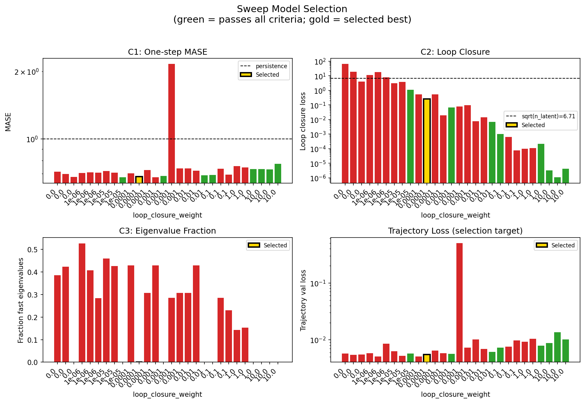
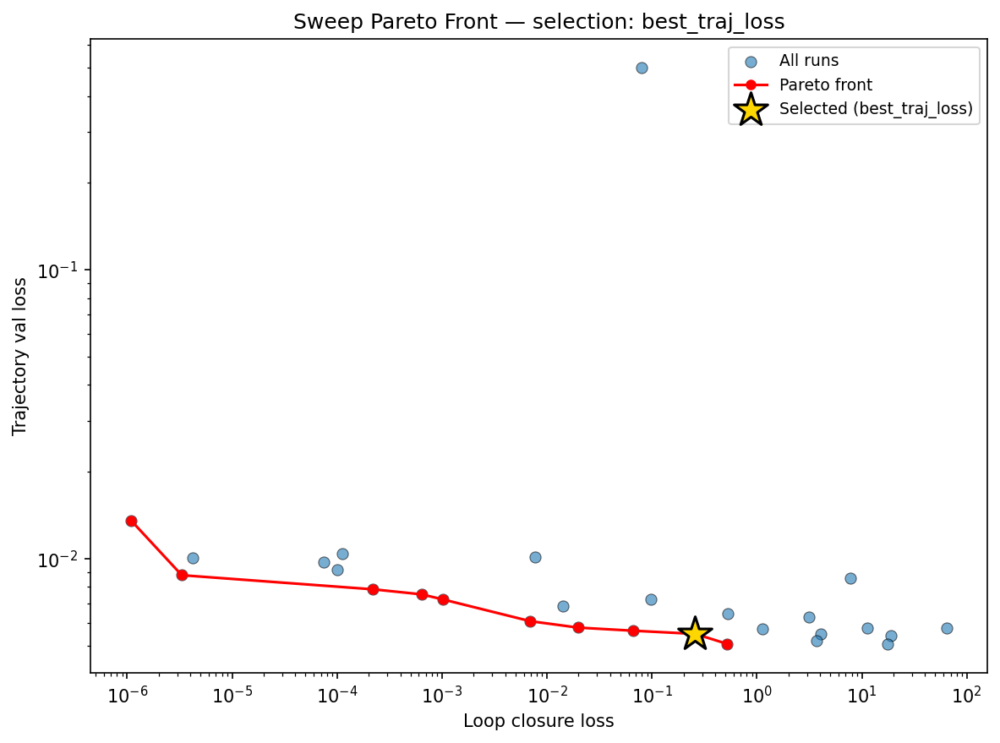
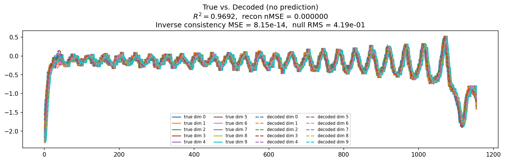
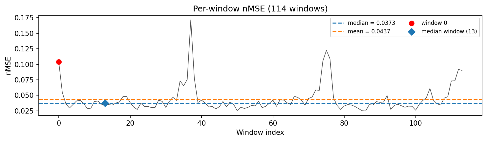
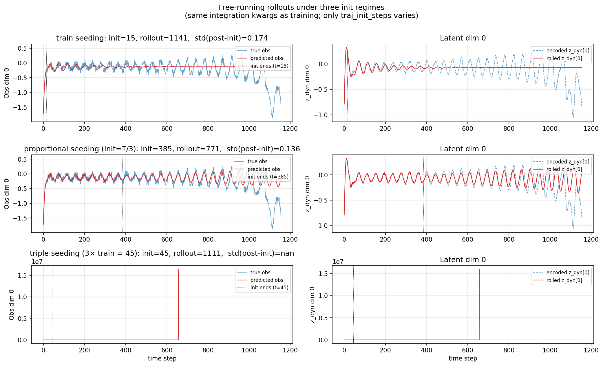
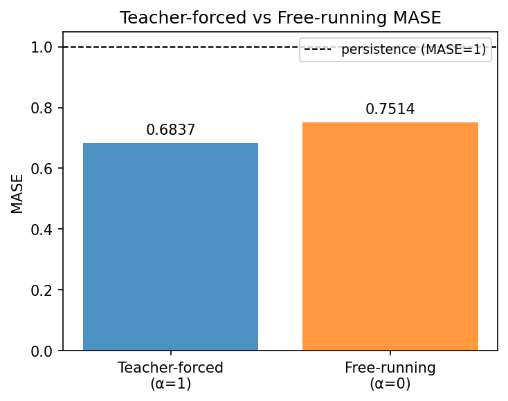
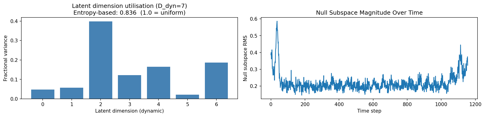
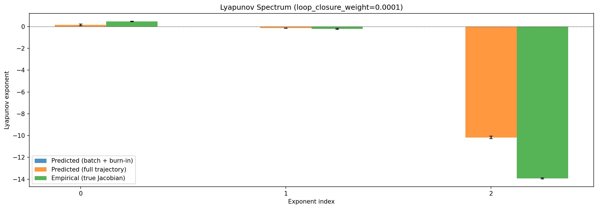
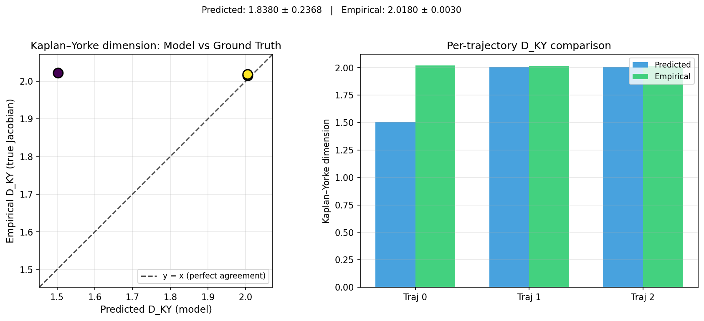
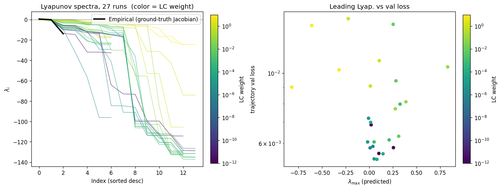
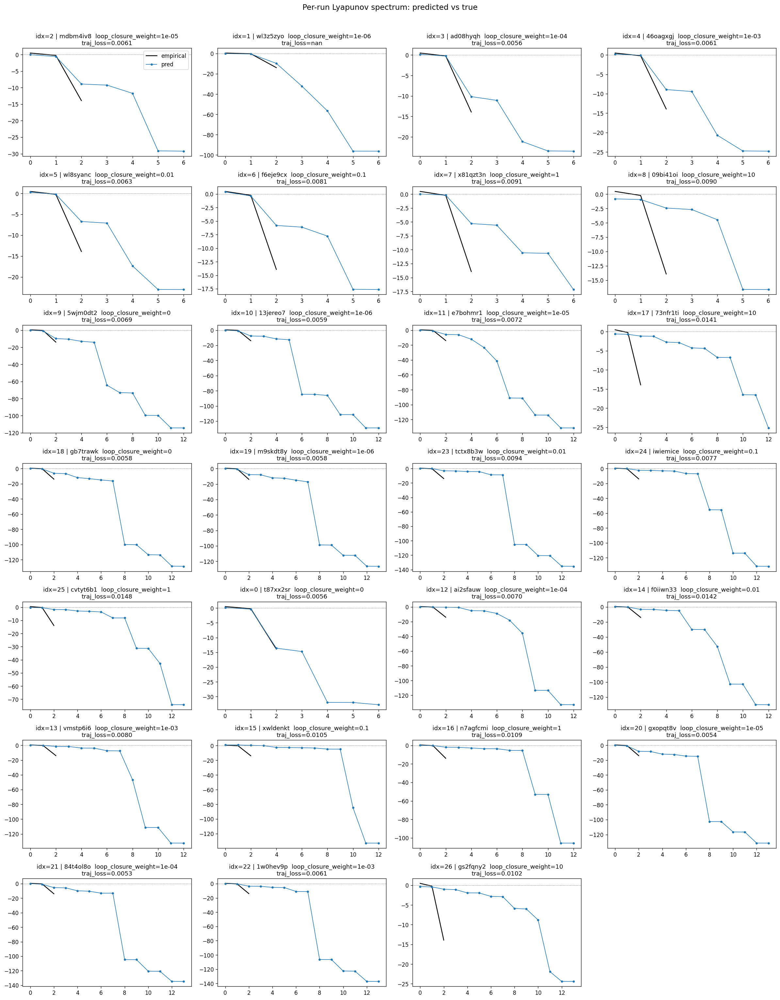
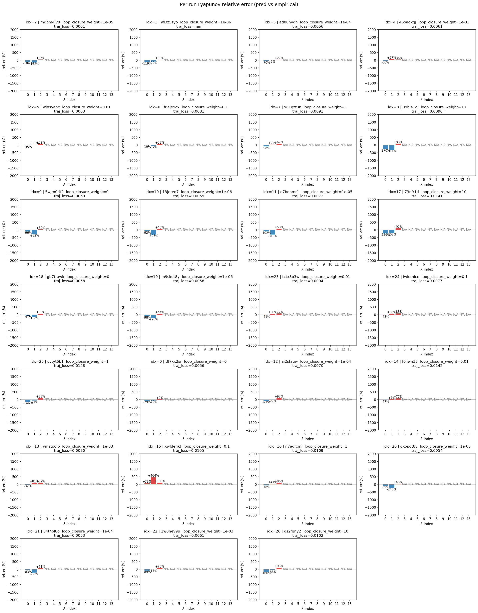
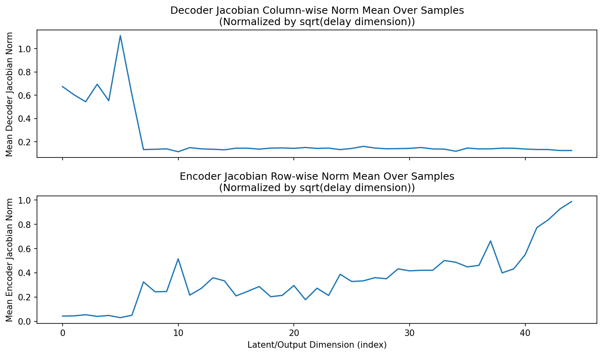
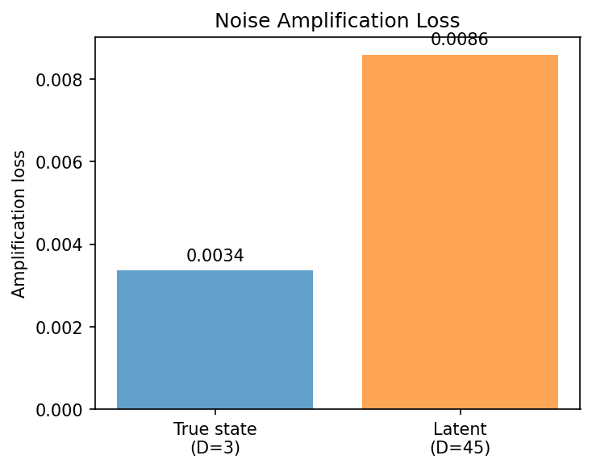
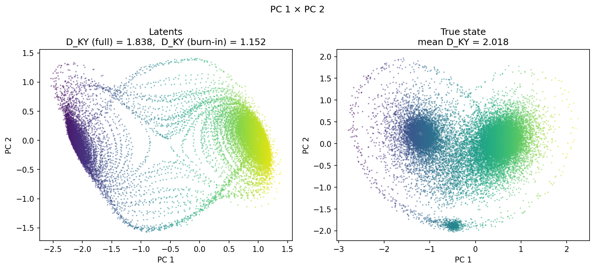
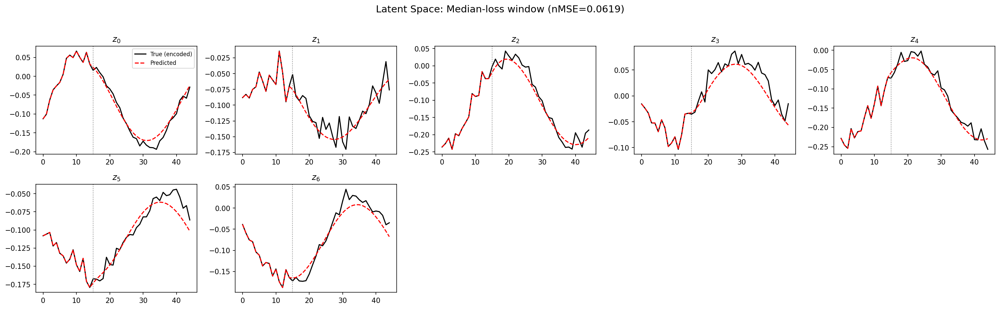
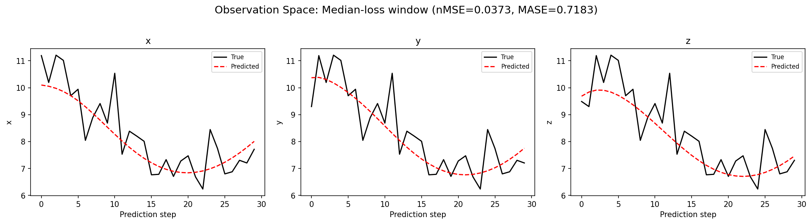
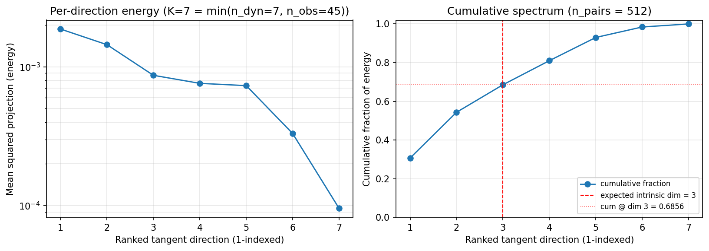
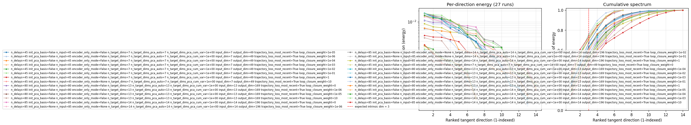
(to be written)
run_analytics stdoutrun_analyticsNo run_id provided — selecting best run from group 'lorenz_partial_additive_mse_uniform_p30_obsnoise005_top3nd_init15_autodim__lc_sweep' ...
Found 36 total runs in JacobianODE/Lorenz_INDpartial_NDInitSweep_autodim_D1_NormTrue__JacobianODE (group=lorenz_partial_additive_mse_uniform_p30_obsnoise005_top3nd_init15_autodim__lc_sweep)
All runs (state, loop_closure_weight, tangent_entropy_weight, kl_dyn_weight):
fr3dvu76: state=finished, lc=0.0, te=0.0, kl_dyn=0.0
mdbm4iv8: state=finished, lc=1e-05, te=0.0, kl_dyn=0.0
wl3z5zyo: state=finished, lc=1e-06, te=0.0, kl_dyn=0.0
ad08hyqh: state=finished, lc=0.0001, te=0.0, kl_dyn=0.0
46oagxgj: state=finished, lc=0.001, te=0.0, kl_dyn=0.0
wl8syanc: state=finished, lc=0.01, te=0.0, kl_dyn=0.0
f6eje9cx: state=finished, lc=0.1, te=0.0, kl_dyn=0.0
x81qzt3n: state=finished, lc=1.0, te=0.0, kl_dyn=0.0
09bi41oi: state=finished, lc=10.0, te=0.0, kl_dyn=0.0
5wjm0dt2: state=finished, lc=0.0, te=0.0, kl_dyn=0.0
13jereo7: state=finished, lc=1e-06, te=0.0, kl_dyn=0.0
e7bohmr1: state=finished, lc=1e-05, te=0.0, kl_dyn=0.0
sslzhp4w: state=finished, lc=0.0001, te=0.0, kl_dyn=0.0
73nfr1ti: state=finished, lc=10.0, te=0.0, kl_dyn=0.0
gb7trawk: state=finished, lc=0.0, te=0.0, kl_dyn=0.0
mpep9pgd: state=finished, lc=0.01, te=0.0, kl_dyn=0.0
7iwcr06x: state=finished, lc=1.0, te=0.0, kl_dyn=0.0
gafrpwvm: state=finished, lc=0.1, te=0.0, kl_dyn=0.0
v2ttbdij: state=crashed, lc=0.001, te=0.0, kl_dyn=0.0
m9skdt8y: state=finished, lc=1e-06, te=0.0, kl_dyn=0.0
le0dzlw2: state=crashed, lc=0.001, te=0.0, kl_dyn=0.0
x0dhsm7j: state=finished, lc=1e-05, te=0.0, kl_dyn=0.0
mqwp7k5w: state=finished, lc=0.0001, te=0.0, kl_dyn=0.0
tctx8b3w: state=finished, lc=0.01, te=0.0, kl_dyn=0.0
iwiemice: state=finished, lc=0.1, te=0.0, kl_dyn=0.0
cvtyt6b1: state=finished, lc=1.0, te=0.0, kl_dyn=0.0
t87xx2sr: state=finished, lc=0.0, te=0.0, kl_dyn=0.0
ai2sfauw: state=finished, lc=0.0001, te=0.0, kl_dyn=0.0
f0iiwn33: state=finished, lc=0.01, te=0.0, kl_dyn=0.0
vmstp6i6: state=finished, lc=0.001, te=0.0, kl_dyn=0.0
xwldenkt: state=finished, lc=0.1, te=0.0, kl_dyn=0.0
n7agfcmi: state=finished, lc=1.0, te=0.0, kl_dyn=0.0
gxopqt8v: state=finished, lc=1e-05, te=0.0, kl_dyn=0.0
84t4ol8o: state=finished, lc=0.0001, te=0.0, kl_dyn=0.0
1w0hev9p: state=finished, lc=0.001, te=0.0, kl_dyn=0.0
gs2fqny2: state=finished, lc=10.0, te=0.0, kl_dyn=0.0
slurm_timeout_min not found in any run config — falling back to 180 min
Including fr3dvu76 (lc=0.0): use_all_runs=True (state=finished)
Including mdbm4iv8 (lc=1e-05): use_all_runs=True (state=finished)
Including wl3z5zyo (lc=1e-06): use_all_runs=True (state=finished)
Including ad08hyqh (lc=0.0001): use_all_runs=True (state=finished)
Including 46oagxgj (lc=0.001): use_all_runs=True (state=finished)
Including wl8syanc (lc=0.01): use_all_runs=True (state=finished)
Including f6eje9cx (lc=0.1): use_all_runs=True (state=finished)
Including x81qzt3n (lc=1.0): use_all_runs=True (state=finished)
Including 09bi41oi (lc=10.0): use_all_runs=True (state=finished)
Including 5wjm0dt2 (lc=0.0): use_all_runs=True (state=finished)
Including 13jereo7 (lc=1e-06): use_all_runs=True (state=finished)
Including e7bohmr1 (lc=1e-05): use_all_runs=True (state=finished)
Including sslzhp4w (lc=0.0001): use_all_runs=True (state=finished)
Including 73nfr1ti (lc=10.0): use_all_runs=True (state=finished)
Including gb7trawk (lc=0.0): use_all_runs=True (state=finished)
Including mpep9pgd (lc=0.01): use_all_runs=True (state=finished)
Including 7iwcr06x (lc=1.0): use_all_runs=True (state=finished)
Including gafrpwvm (lc=0.1): use_all_runs=True (state=finished)
Including v2ttbdij (lc=0.001): use_all_runs=True (state=crashed)
Including m9skdt8y (lc=1e-06): use_all_runs=True (state=finished)
Including le0dzlw2 (lc=0.001): use_all_runs=True (state=crashed)
Including x0dhsm7j (lc=1e-05): use_all_runs=True (state=finished)
Including mqwp7k5w (lc=0.0001): use_all_runs=True (state=finished)
Including tctx8b3w (lc=0.01): use_all_runs=True (state=finished)
Including iwiemice (lc=0.1): use_all_runs=True (state=finished)
Including cvtyt6b1 (lc=1.0): use_all_runs=True (state=finished)
Including t87xx2sr (lc=0.0): use_all_runs=True (state=finished)
Including ai2sfauw (lc=0.0001): use_all_runs=True (state=finished)
Including f0iiwn33 (lc=0.01): use_all_runs=True (state=finished)
Including vmstp6i6 (lc=0.001): use_all_runs=True (state=finished)
Including xwldenkt (lc=0.1): use_all_runs=True (state=finished)
Including n7agfcmi (lc=1.0): use_all_runs=True (state=finished)
Including gxopqt8v (lc=1e-05): use_all_runs=True (state=finished)
Including 84t4ol8o (lc=0.0001): use_all_runs=True (state=finished)
Including 1w0hev9p (lc=0.001): use_all_runs=True (state=finished)
Including gs2fqny2 (lc=10.0): use_all_runs=True (state=finished)
Found 36 effectively-done sweep runs:
loop_closure_weight=0.0, tangent_entropy_weight=0.0, kl_dyn_weight=0.0 -> run_id=5wjm0dt2
loop_closure_weight=0.0, tangent_entropy_weight=0.0, kl_dyn_weight=0.0 -> run_id=fr3dvu76
loop_closure_weight=0.0, tangent_entropy_weight=0.0, kl_dyn_weight=0.0 -> run_id=gb7trawk
loop_closure_weight=0.0, tangent_entropy_weight=0.0, kl_dyn_weight=0.0 -> run_id=t87xx2sr
loop_closure_weight=1e-06, tangent_entropy_weight=0.0, kl_dyn_weight=0.0 -> run_id=13jereo7
loop_closure_weight=1e-06, tangent_entropy_weight=0.0, kl_dyn_weight=0.0 -> run_id=m9skdt8y
loop_closure_weight=1e-06, tangent_entropy_weight=0.0, kl_dyn_weight=0.0 -> run_id=wl3z5zyo
loop_closure_weight=1e-05, tangent_entropy_weight=0.0, kl_dyn_weight=0.0 -> run_id=e7bohmr1
loop_closure_weight=1e-05, tangent_entropy_weight=0.0, kl_dyn_weight=0.0 -> run_id=gxopqt8v
loop_closure_weight=1e-05, tangent_entropy_weight=0.0, kl_dyn_weight=0.0 -> run_id=mdbm4iv8
loop_closure_weight=1e-05, tangent_entropy_weight=0.0, kl_dyn_weight=0.0 -> run_id=x0dhsm7j
loop_closure_weight=0.0001, tangent_entropy_weight=0.0, kl_dyn_weight=0.0 -> run_id=84t4ol8o
loop_closure_weight=0.0001, tangent_entropy_weight=0.0, kl_dyn_weight=0.0 -> run_id=ad08hyqh
loop_closure_weight=0.0001, tangent_entropy_weight=0.0, kl_dyn_weight=0.0 -> run_id=ai2sfauw
loop_closure_weight=0.0001, tangent_entropy_weight=0.0, kl_dyn_weight=0.0 -> run_id=mqwp7k5w
loop_closure_weight=0.0001, tangent_entropy_weight=0.0, kl_dyn_weight=0.0 -> run_id=sslzhp4w
loop_closure_weight=0.001, tangent_entropy_weight=0.0, kl_dyn_weight=0.0 -> run_id=1w0hev9p
loop_closure_weight=0.001, tangent_entropy_weight=0.0, kl_dyn_weight=0.0 -> run_id=46oagxgj
loop_closure_weight=0.001, tangent_entropy_weight=0.0, kl_dyn_weight=0.0 -> run_id=le0dzlw2
loop_closure_weight=0.001, tangent_entropy_weight=0.0, kl_dyn_weight=0.0 -> run_id=v2ttbdij
loop_closure_weight=0.001, tangent_entropy_weight=0.0, kl_dyn_weight=0.0 -> run_id=vmstp6i6
loop_closure_weight=0.01, tangent_entropy_weight=0.0, kl_dyn_weight=0.0 -> run_id=f0iiwn33
loop_closure_weight=0.01, tangent_entropy_weight=0.0, kl_dyn_weight=0.0 -> run_id=mpep9pgd
loop_closure_weight=0.01, tangent_entropy_weight=0.0, kl_dyn_weight=0.0 -> run_id=tctx8b3w
loop_closure_weight=0.01, tangent_entropy_weight=0.0, kl_dyn_weight=0.0 -> run_id=wl8syanc
loop_closure_weight=0.1, tangent_entropy_weight=0.0, kl_dyn_weight=0.0 -> run_id=f6eje9cx
loop_closure_weight=0.1, tangent_entropy_weight=0.0, kl_dyn_weight=0.0 -> run_id=gafrpwvm
loop_closure_weight=0.1, tangent_entropy_weight=0.0, kl_dyn_weight=0.0 -> run_id=iwiemice
loop_closure_weight=0.1, tangent_entropy_weight=0.0, kl_dyn_weight=0.0 -> run_id=xwldenkt
loop_closure_weight=1.0, tangent_entropy_weight=0.0, kl_dyn_weight=0.0 -> run_id=7iwcr06x
loop_closure_weight=1.0, tangent_entropy_weight=0.0, kl_dyn_weight=0.0 -> run_id=cvtyt6b1
loop_closure_weight=1.0, tangent_entropy_weight=0.0, kl_dyn_weight=0.0 -> run_id=n7agfcmi
loop_closure_weight=1.0, tangent_entropy_weight=0.0, kl_dyn_weight=0.0 -> run_id=x81qzt3n
loop_closure_weight=10.0, tangent_entropy_weight=0.0, kl_dyn_weight=0.0 -> run_id=09bi41oi
loop_closure_weight=10.0, tangent_entropy_weight=0.0, kl_dyn_weight=0.0 -> run_id=73nfr1ti
loop_closure_weight=10.0, tangent_entropy_weight=0.0, kl_dyn_weight=0.0 -> run_id=gs2fqny2
Dropping 8 run(s) with no checkpoint dir: ['fr3dvu76', 'x0dhsm7j', 'mqwp7k5w', 'sslzhp4w', 'v2ttbdij', 'mpep9pgd', 'gafrpwvm', '7iwcr06x']
n_dims=80, n_latent=80, n_dyn=13, dt=0.0150
run=5wjm0dt2: DiagnosticMetrics(one_step_mase=0.7136844992637634, loop_closure_loss=64.18236541748047, fast_eigenvalue_fraction=0.38538461923599243, trajectory_val_loss=0.005748343653976917) (from W&B history)
run=gb7trawk: DiagnosticMetrics(one_step_mase=0.6977875828742981, loop_closure_loss=18.88886833190918, fast_eigenvalue_fraction=0.4235714375972748, trajectory_val_loss=0.005434954073280096) (from W&B history)
run=t87xx2sr: DiagnosticMetrics(one_step_mase=0.6771277189254761, loop_closure_loss=4.0888590812683105, fast_eigenvalue_fraction=0.0, trajectory_val_loss=0.005500848405063152) (from W&B history)
run=13jereo7: DiagnosticMetrics(one_step_mase=0.7037107944488525, loop_closure_loss=11.235709190368652, fast_eigenvalue_fraction=0.5265384912490845, trajectory_val_loss=0.005770507268607616) (from W&B history)
run=m9skdt8y: DiagnosticMetrics(one_step_mase=0.7100340127944946, loop_closure_loss=17.558826446533203, fast_eigenvalue_fraction=0.4067857265472412, trajectory_val_loss=0.005086647812277079) (from W&B history)
run=wl3z5zyo: DiagnosticMetrics(one_step_mase=0.7075402736663818, loop_closure_loss=7.7024431228637695, fast_eigenvalue_fraction=0.2842857241630554, trajectory_val_loss=0.00855868961662054) (from W&B history)
run=e7bohmr1: DiagnosticMetrics(one_step_mase=0.7192264199256897, loop_closure_loss=3.1508431434631348, fast_eigenvalue_fraction=0.46000000834465027, trajectory_val_loss=0.0062708258628845215) (from W&B history)
run=gxopqt8v: DiagnosticMetrics(one_step_mase=0.70595782995224, loop_closure_loss=3.728877544403076, fast_eigenvalue_fraction=0.42571428418159485, trajectory_val_loss=0.005191677715629339) (from W&B history)
run=mdbm4iv8: DiagnosticMetrics(one_step_mase=0.6742345690727234, loop_closure_loss=1.1282624006271362, fast_eigenvalue_fraction=0.0, trajectory_val_loss=0.005725488532334566) (from W&B history)
run=84t4ol8o: DiagnosticMetrics(one_step_mase=0.701894223690033, loop_closure_loss=0.5226759910583496, fast_eigenvalue_fraction=0.4285714328289032, trajectory_val_loss=0.005077174864709377) (from W&B history)
run=ad08hyqh: DiagnosticMetrics(one_step_mase=0.6796920895576477, loop_closure_loss=0.25840210914611816, fast_eigenvalue_fraction=0.0, trajectory_val_loss=0.0054999589920043945) (from W&B history)
run=ai2sfauw: DiagnosticMetrics(one_step_mase=0.7251628637313843, loop_closure_loss=0.5279591083526611, fast_eigenvalue_fraction=0.3076923191547394, trajectory_val_loss=0.006482718512415886) (from W&B history)
run=1w0hev9p: DiagnosticMetrics(one_step_mase=0.6736676692962646, loop_closure_loss=0.019810019060969353, fast_eigenvalue_fraction=0.4285714328289032, trajectory_val_loss=0.005783000495284796) (from W&B history)
run=46oagxgj: DiagnosticMetrics(one_step_mase=0.6843873262405396, loop_closure_loss=0.06650350242853165, fast_eigenvalue_fraction=0.0, trajectory_val_loss=0.005641073454171419) (from W&B history)
run=le0dzlw2: DiagnosticMetrics(one_step_mase=2.155113697052002, loop_closure_loss=0.08006851375102997, fast_eigenvalue_fraction=0.2857142984867096, trajectory_val_loss=0.5006764531135559) (from W&B history)
run=vmstp6i6: DiagnosticMetrics(one_step_mase=0.7389737963676453, loop_closure_loss=0.09823773056268692, fast_eigenvalue_fraction=0.3076923191547394, trajectory_val_loss=0.00727051543071866) (from W&B history)
run=f0iiwn33: DiagnosticMetrics(one_step_mase=0.7390971779823303, loop_closure_loss=0.0076867518946528435, fast_eigenvalue_fraction=0.3076923191547394, trajectory_val_loss=0.010159263387322426) (from W&B history)
run=tctx8b3w: DiagnosticMetrics(one_step_mase=0.7216696739196777, loop_closure_loss=0.01429005153477192, fast_eigenvalue_fraction=0.4285714328289032, trajectory_val_loss=0.006873263046145439) (from W&B history)
run=wl8syanc: DiagnosticMetrics(one_step_mase=0.6883136034011841, loop_closure_loss=0.006936926394701004, fast_eigenvalue_fraction=0.0, trajectory_val_loss=0.006086151581257582) (from W&B history)
run=f6eje9cx: DiagnosticMetrics(one_step_mase=0.6904960870742798, loop_closure_loss=0.00101792614441365, fast_eigenvalue_fraction=0.0, trajectory_val_loss=0.007239524275064468) (from W&B history)
run=iwiemice: DiagnosticMetrics(one_step_mase=0.7363907694816589, loop_closure_loss=0.0006363973952829838, fast_eigenvalue_fraction=0.2857142984867096, trajectory_val_loss=0.00754039641469717) (from W&B history)
run=xwldenkt: DiagnosticMetrics(one_step_mase=0.6927754282951355, loop_closure_loss=7.533898315159604e-05, fast_eigenvalue_fraction=0.23076923191547394, trajectory_val_loss=0.009746870025992393) (from W&B history)
run=cvtyt6b1: DiagnosticMetrics(one_step_mase=0.7558563947677612, loop_closure_loss=0.0001003972502076067, fast_eigenvalue_fraction=0.1428571492433548, trajectory_val_loss=0.009198070503771305) (from W&B history)
run=n7agfcmi: DiagnosticMetrics(one_step_mase=0.7451316714286804, loop_closure_loss=0.00011249169619986787, fast_eigenvalue_fraction=0.1538461595773697, trajectory_val_loss=0.010410863906145096) (from W&B history)
run=x81qzt3n: DiagnosticMetrics(one_step_mase=0.7324872612953186, loop_closure_loss=0.0002189130464103073, fast_eigenvalue_fraction=0.0, trajectory_val_loss=0.007847564294934273) (from W&B history)
run=09bi41oi: DiagnosticMetrics(one_step_mase=0.7343286275863647, loop_closure_loss=3.3152919058920816e-06, fast_eigenvalue_fraction=0.0, trajectory_val_loss=0.008780893869698048) (from W&B history)
run=73nfr1ti: DiagnosticMetrics(one_step_mase=0.7318208813667297, loop_closure_loss=1.0894430033658864e-06, fast_eigenvalue_fraction=0.0, trajectory_val_loss=0.013580323196947575) (from W&B history)
run=gs2fqny2: DiagnosticMetrics(one_step_mase=0.7739458084106445, loop_closure_loss=4.198372153041419e-06, fast_eigenvalue_fraction=0.0, trajectory_val_loss=0.01010216400027275) (from W&B history)
Ranking method: best_traj_loss
Best run ID: ad08hyqh
Best loop_closure_weight: 0.0001
Best tangent_entropy_weight: 0.0
Best kl_dyn_weight: 0.0
Best traj loss: 0.005500
Criteria applied: ['C1', 'C2', 'C3']
Surviving: 9 / 28
Auto-selected run_id: ad08hyqh
======================================================================
PARETO FRONTIER RUNS (10 runs)
======================================================================
Run ID LC Loss Traj Val Loss
------------ -------------- --------------
73nfr1ti 0.000001 0.013580
09bi41oi 0.000003 0.008781
x81qzt3n 0.000219 0.007848
iwiemice 0.000636 0.007540
f6eje9cx 0.001018 0.007240
wl8syanc 0.006937 0.006086
1w0hev9p 0.019810 0.005783
46oagxgj 0.066504 0.005641
ad08hyqh 0.258402 0.005500 <-- selected
84t4ol8o 0.522676 0.005077
======================================================================
RANKING METHOD COMPARISON (over 9 survivors)
======================================================================
Method Run ID LC Loss Traj Val Loss
---------------------- ------------ -------------- --------------
best_traj_loss ad08hyqh 0.258402 0.005500 <-- active
pareto_knee 09bi41oi 0.000003 0.008781
geo_rank ad08hyqh 0.258402 0.005500
minimax_rank f6eje9cx 0.001018 0.007240
geo_log_score ad08hyqh 0.258402 0.005500
minimax_log_score x81qzt3n 0.000219 0.007848
======================================================================
Loading run ad08hyqh from JacobianODE/Lorenz_INDpartial_NDInitSweep_autodim_D1_NormTrue__JacobianODE ...
Train dataset shape: torch.Size([24442, 45, 45])
Validation dataset shape: torch.Size([7777, 45, 45])
Test dataset shape: torch.Size([3333, 45, 45])
Train trajectories dataset shape: torch.Size([22, 1156, 45])
Validation trajectories dataset shape: torch.Size([7, 1156, 45])
Test trajectories dataset shape: torch.Size([3, 1156, 45])
Loading checkpoint epoch=113-step=22800.ckpt...
Computing reconstruction ...
Computing MASE ...
Teacher-forced MASE: 0.6837
Free-running MASE: 0.7514
Computing latent utilization ...
Entropy-based utilization: 0.836
Null subspace mean RMS: 2.259378e-01
Computing Lyapunov exponents ...
Computing full-trajectory Lyapunov (3 test trajs, T=1156) ...
Predicted Lyapunov exponents (batch+burn-in, 128 windowed trajs):
λ_1 = +nan ± nan
λ_2 = +nan ± nan
λ_3 = +nan ± nan
λ_4 = +nan ± nan
λ_5 = +nan ± nan
λ_6 = +nan ± nan
λ_7 = +nan ± nan
Predicted Lyapunov exponents (full-length, 3 test trajs):
λ_1 = +0.1584 ± 0.0745
λ_2 = -0.1459 ± 0.0111
λ_3 = -10.1726 ± 0.1192
λ_4 = -11.0615 ± 0.1383
λ_5 = -21.6369 ± 0.0490
λ_6 = -23.4921 ± 0.0318
λ_7 = -23.5190 ± 0.0192
Empirical Lyapunov exponents (mean ± std):
λ_1 = +0.4677 ± 0.0259
λ_2 = -0.2173 ± 0.0549
λ_3 = -13.9174 ± 0.0513
Mean KY dim (predicted): 1.838 ± 0.237
Mean KY dim (empirical): 2.018 ± 0.003
Mean KY dim (burn-in): 1.152 ± 0.715
Computing prediction windows ...
Windows: 114 — nMSE min=0.0248, median=0.0373, mean=0.0437, max=0.1719
Computing long-trajectory free-running rollouts ...
Computing encoder/decoder Jacobians ...
encoder_jacobian: (128, 45, 45)
decoder_jacobian: (128, 45, 45)
Computing amplification loss ...
Amplification loss — True state: 0.003366
Amplification loss — Latent: 0.008593
Computing tangent space spectrum ...